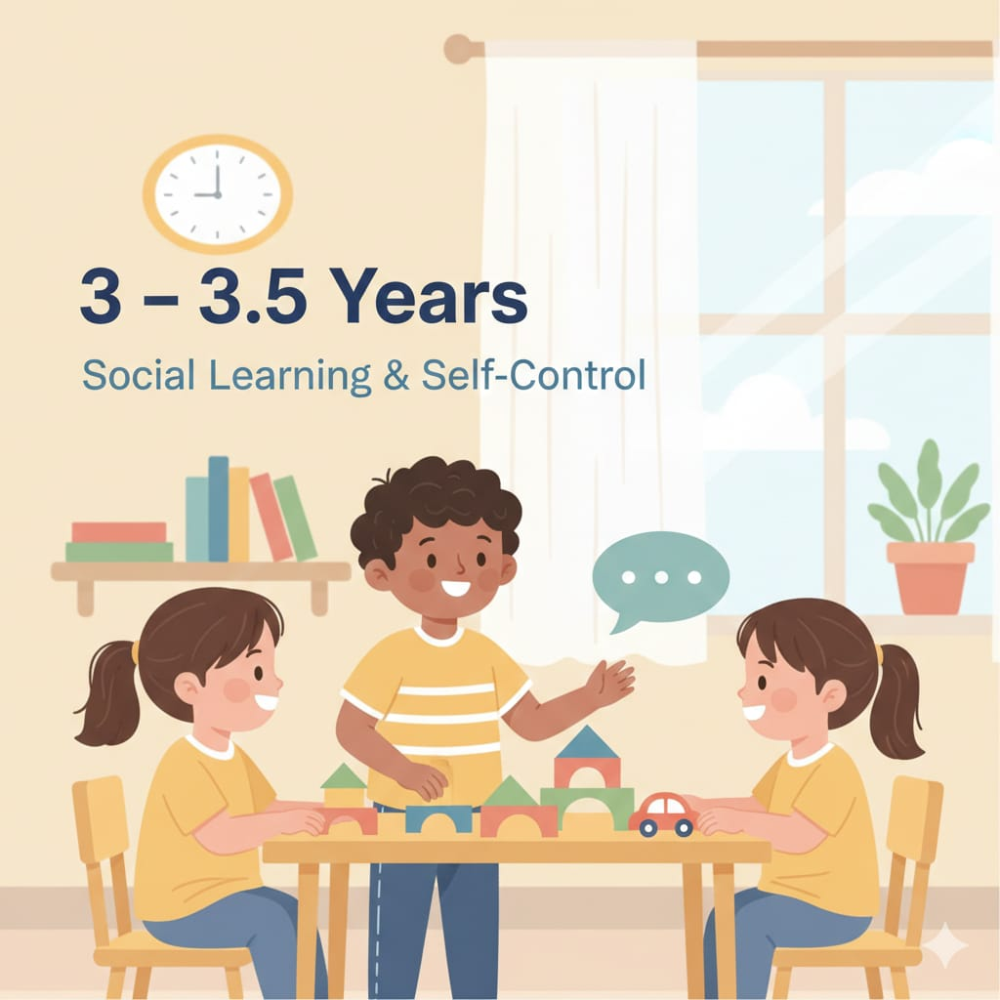

3 – 3.5 سنوات
المرحلة دي بيظهر فيها الكلام أكتر، والطفل يبدأ يتعلم قواعد الجماعة (حضانة/أطفال)، ومع ده تظهر مشاكل مشاركة وعدوانية وسلوك عنيد.

مفتاح السن ده: قواعد قصيرة + تدريب عملي + ثبات بين البيت والحضانة.
المرحلة دي بيظهر فيها الكلام أكتر، والطفل يبدأ يتعلم قواعد الجماعة (حضانة/أطفال)، ومع ده تظهر مشاكل مشاركة وعدوانية وسلوك عنيد.
